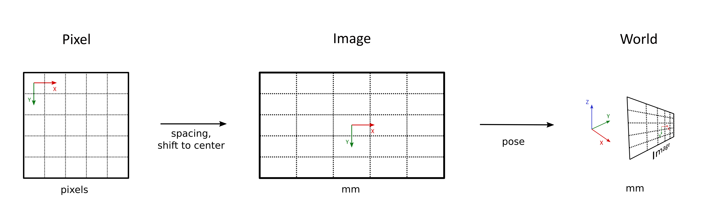
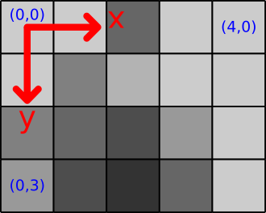
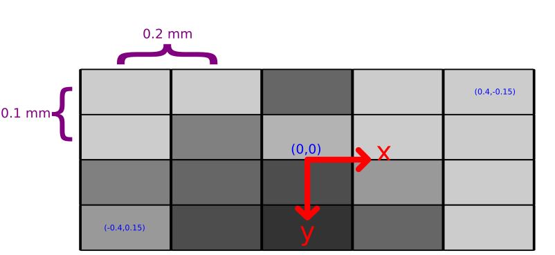
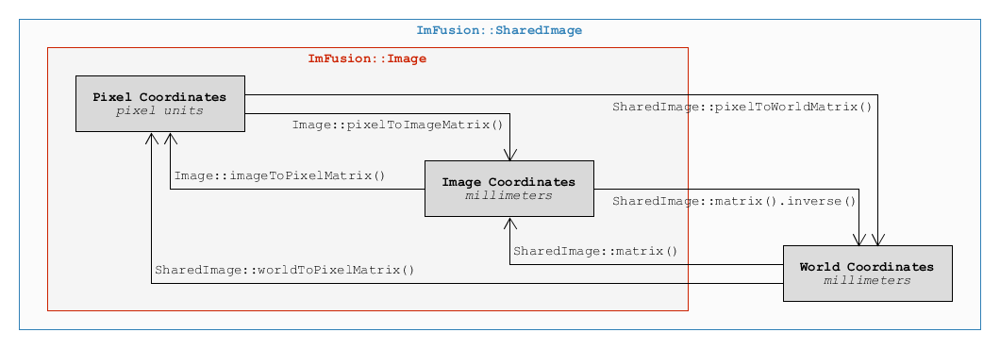

|
ImFusion C++ SDK 4.5.0-rc+43-5d204848
|
|
ImFusion C++ SDK 4.5.0-rc+43-5d204848
|
In ImFusionLib, different coordinate systems are used, especially when dealing with images.
Depending on the type of Data, transformation matrices are also stored differently, regularly in a convention most suitable for efficient processing. This page provides an overview on the different coordinate systems, storage conventions and available conversions between them. In all cases, coordinate systems in the ImFusionLib are right-handed.
Generally, there are three coordinate systems for images. The first one is only available for image data types (Image, SharedImage, SharedImageSet, and all base classes).

The pixel coordinate system maps directly to the pixels of an image. One unit corresponds to one pixel in the image. In general, the framework supports both the OpenCV and OpenGL conventions for the origin of the pixel coordinate system. By default (OpenCV-style), the (0, 0) pixel is in the upper left corner. This is the case for most common formats (PNG, MHD, Dicom) as well as all ultrasound or X-ray images. However, for specific applications, images with pixel data stored with respect to the bottom left corner can also be found.

The data coordinate system is the local coordinate system of every data element and uses millimeter as unit. For images, where the term image coordinate system is also commonly used, the origin of this coordinate system is always placed in the center of the image, which increases the numerical stability in the context of many optimization problems, including image registration. Pixel coordinates can be converted to image coordinates and back by using the Image::pixelToImage and Image::imageToPixel methods. The conversion between pixels and millimeters depends on the Image::spacing, which defines the space in millimeters between two pixels.

Finally, there is the world coordinate system. World coordinates are also defined in millimeters but the origin is the same for all data. The world transformation is mainly relevant for 3D data because most 2D images won't have a transformation matrix. For images, direct conversions to pixel space are available in the form of SharedImage::worldToPixel and SharedImage::pixelToWorld methods.
The renderers/views employ a right-handed coordinate system with the following conventions wrt. patient space:
The image API provides different interfaces and helper functions for converting between the three main coordinate systems. Pixel and Image coordinates are handled by the base Image interface. The transformation to convert from and to world coordinates is only part of the SharedImage interface.

For the transformations between the data (image) and world coordinate systems, each data element internally stores at least one transformation matrix, which is accessible through Data::matrix. Depending on the type of Data, these matrices may either map to or from the world coordinate system:
Developers should use methods Data::matrix and Data::setMatrix if they only deal with a known data type for performance reasons. In cases where multiple or a priori unknown data types are used and inference of the internally used transformation convention is cumbersome, the convenience methods Data::matrixToWorld and Data::matrixFromWorld shall be used. Depending on the concrete base class implementation, either Data::matrix or its inverse are retrieved.